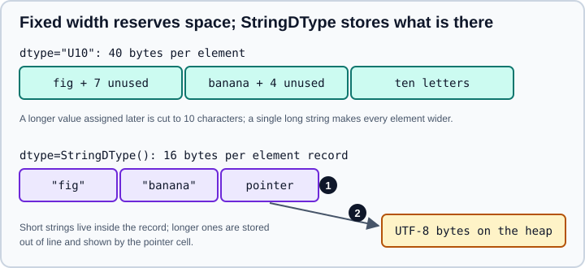

Strings, Bytes and StringDType
|
This content was generated with the assistance of AI and should be verified against the official documentation before being relied on in production. |
This page targets NumPy 2.5 (2.5.4 was current), and was checked in October 2026. Examples target Python 3.13 or 3.14 and were run on Python 3.13. The examples ran on NumPy 2.5.4. NumPy is built for numbers, and its text support is deliberately modest; the StringDType introduced in NumPy 2.0 improved it a great deal. For serious text processing and for labelled tabular data, pandas (whose str dtype is covered in the pandas part of this section) or a text library is usually the better tool.
NumPy has four ways to hold text in an array:
| Representation | Characteristics | Use it for |
|---|---|---|
|
Fixed width, UCS-4 (4 bytes per character), NumPy scalar type |
Short strings of similar length; the default when you build an array from Python strings |
|
Fixed width, 1 byte per character, NumPy scalar type |
Raw bytes and ASCII data read from binary files |
|
Variable width, UTF-8, each element is a Python |
Arrays of strings of very different lengths and text columns; new code |
|
An array of references to Python objects |
Mixed data and as a fallback; no vectorised string loops |
Fixed-width U and S dtypes
When you give NumPy a list of Python strings, it chooses a U dtype wide enough for the longest string.
import numpy as np
u = np.array(["a", "héllo", "日本語"])
print(u.dtype, u.itemsize, u.nbytes) # <U5 20 60
s = np.array([b"abc", b"de"])
print(s.dtype, s) # |S3 [b'abc' b'de']
print(np.dtype("U5").itemsize, np.dtype("S5").itemsize) # 20 5Four bytes per character, whatever the content, means U arrays use a lot of memory, and a single long string makes every element that wide.
Truncation on assignment
A fixed-width dtype cannot grow. Assigning a longer string silently truncates it.
import numpy as np
arr = np.array(["a", "b"]) # dtype <U1
arr[0] = "much longer"
print(arr) # ['m' 'b']
print(np.array(["abc"], dtype="U2")) # ['ab'] truncated at creation
print(np.array(["abc", "de"]).astype("U10").dtype) # <U10 widen first when you intend to assign longer textChoose the width up front (dtype="U50") or use StringDType. Another subtlety is that trailing NUL characters in U and S arrays are indistinguishable from padding, so they are dropped: np.array(["ab\0"])[0] reads back as "ab", with length 2. The 'a' dtype alias (a historical spelling of S) was removed in NumPy 2.5, so np.dtype("a5") raises TypeError: data type 'a5' not understood; write "S5".
StringDType
numpy.dtypes.StringDType (NEP 55, NumPy 2.0) stores variable-length UTF-8 text. Create it with the class or with the character code "T".
import numpy as np
from numpy.dtypes import StringDType
b = np.array(["apple", "fig", "banana"], dtype=StringDType())
print(b, b.dtype) # ['apple' 'fig' 'banana'] StringDType()
print(b.itemsize) # 16
print(np.dtype("T") == StringDType()) # True
b[1] = "a very long string that does not fit in any fixed width itemsize at all, no truncation"
print(b[1][:20]) # a very long string t
print(type(b[0])) # <class 'str'>
In the figure, marker 1 is the fixed-size per-element record, and marker 2 is the out-of-line UTF-8 storage that a record points to when the string is too long to be stored inside it. itemsize is the size of the record (16 bytes on a 64-bit platform), and nbytes counts only the records, not the heap data, so nbytes underestimates the memory used by long strings. Elements read back as Python str objects, not np.str_.
A realistic comparison: 100,000 short strings of which one in a hundred is 50 times longer than the others make a U300 array of 120,000,000 bytes (every element reserves the width of the longest), whereas the same data as StringDType needs one 16-byte record per element (1,600,000 bytes) plus heap storage for just the few long strings.
Missing values: na_object
StringDType(na_object=...) names a sentinel that represents a missing string. It can be any object, typically None, np.nan or pd.NA. Elements equal to the sentinel are stored as missing and not as text.
import numpy as np
from numpy.dtypes import StringDType
with_nan = np.array(["a", np.nan, "c"], dtype=StringDType(na_object=np.nan))
print(with_nan) # ['a' nan 'c']
print(np.isnan(with_nan)) # [False True False]
print(np.sort(with_nan)) # ['a' 'c' nan] missing values sort last
with_none = np.array(["a", None, "c"], dtype=StringDType(na_object=None))
print(with_none, with_none.dtype.na_object) # ['a' None 'c'] None
print(with_none == "a") # [ True False False]Source: numpy.dtypes.StringDType
Without na_object, only real strings are allowed. How the string functions treat a missing element depends on the function. With na_object=np.nan, np.strings.strip and np.strings.add pass the missing value through, np.strings.startswith returns False for it, and np.strings.str_len and np.strings.find raise ValueError (for example, The length of a null string is undefined). np.strings.upper with a NaN or None sentinel raises TypeError in NumPy 2.5. In practice, fill or mask missing values before calling a string function unless you have tested that function on your sentinel. pandas handles all of this with its own missing-value rules.
coerce: what may enter the array
coerce=True (the default) converts non-string objects to strings on assignment; coerce=False rejects them.
import numpy as np
from numpy.dtypes import StringDType
print(np.array([1, 2.5], dtype=StringDType())) # ['1' '2.5']
try:
np.array([1, 2], dtype=StringDType(coerce=False))
except ValueError as e:
print(e) # StringDType only allows string data when string coercion is disabled.Source: numpy.dtypes.StringDType
Set coerce=False when you want accidental numbers to be an error rather than the string "1".
The np.strings functions
numpy.strings (introduced in NumPy 2.0) provides vectorised string operations as ufuncs that work on U, S and StringDType arrays. They are the recommended replacement for the legacy np.char module.
import numpy as np
x = np.array([" Alpha ", "beta", "GAMMA_x"])
print(np.strings.strip(x)) # ['Alpha' 'beta' 'GAMMA_x']
print(np.strings.upper(x)) # [' ALPHA ' 'BETA' 'GAMMA_X']
print(np.strings.capitalize(x)) # [' alpha ' 'Beta' 'Gamma_x']
print(np.strings.startswith(x, "b")) # [False True False]
print(np.strings.find(x, "a")) # [ 6 3 -1]
print(np.strings.count(x, "a")) # [1 1 0]
print(np.strings.replace(x, "a", "A")) # [' AlphA ' 'betA' 'GAMMA_x']
print(np.strings.add(x, "!")) # [' Alpha !' 'beta!' 'GAMMA_x!']
print(np.strings.multiply(np.array(["ab", "c"]), 3)) # ['ababab' 'ccc']
print(np.strings.str_len(np.array(["abc", "日本語"]))) # [3 3]
print(np.strings.center(np.array(["ab"]), 6, "*")) # ['**ab**']
print(np.strings.zfill(np.array(["7", "42"]), 4)) # ['0007' '0042']
print(np.strings.slice(np.array(["hello", "world"]), 1, 3)) # ['el' 'or']The module contains these groups of functions:
| Group | Functions |
|---|---|
Case and layout |
|
Trim, replace and edit |
|
Search |
|
Test (return boolean arrays) |
|
Combine |
|
Compare |
|
Measure and convert |
|
np.strings.partition returns three arrays (before, separator, after). np.strings.encode and np.strings.decode convert between U (or StringDType) and S.
Not available in np.strings: split and join
np.strings has no split, join, rsplit or splitlines, because those return variable-length lists that do not fit a regular array. The legacy np.char module still has them: np.char.split(np.array(["a b c"])) returns an object array holding a Python list, and np.char.join("-", np.array(["abc"])) returns ['a-b-c']. For anything like regular expressions, splitting into tokens or parsing, loop in Python or use pandas.Series.str.
Legacy np.char and chararray
numpy.char is the older module with the same function names, plus join, split, rsplit and splitlines, compare_chararrays, and np.char.array and np.char.asarray, which return a chararray subclass whose methods act element-wise and which strips trailing whitespace on item access. In NumPy 2.5 the chararray class is deprecated:
import numpy as np
import warnings
with warnings.catch_warnings(record=True) as w:
warnings.simplefilter("always")
ca = np.char.array(["a", "b"])
print(w[0].category.__name__, w[0].message)
# DeprecationWarning The chararray class is deprecated and will be removed in a future release. Use an ndarray with a string or bytes dtype instead.
print(np.char.upper(np.array(["a"]))) # ['A'] the function interface still worksUse an ordinary ndarray of string dtype with np.strings functions in new code. Most np.char functions still work, but the module is documented as legacy, and old tutorials and books built on np.char.array and chararray methods are outdated.
Comparison, sorting and set operations
Comparison operators, np.sort, np.unique, np.isin and np.argsort work on string arrays and use code-point (not locale) ordering, so uppercase letters sort before lowercase ones.
import numpy as np
from numpy.dtypes import StringDType
print(np.array(["a", "b"]) == "a") # [ True False]
print(np.sort(np.array(["b", "B", "a", "A"]))) # ['A' 'B' 'a' 'b']
print(np.unique(np.array(["b", "a", "b"]), return_counts=True))
# (array(['a', 'b'], dtype='<U1'), array([1, 2]))
print(np.isin(np.array(["a", "z"]), np.array(["a", "b"]))) # [ True False]
t = np.array(["b", "a", "B"], dtype=StringDType())
print(t.argsort(), np.sort(t)) # [2 1 0] ['B' 'a' 'b']For locale-aware or case-insensitive ordering, sort Python-side with a key, or use np.strings.lower to build a key array first. More on sorting is on Sorting, Searching and Counting.
Converting to and from other types
import numpy as np
from numpy.dtypes import StringDType
print(np.array(["1", "2"]).astype(int)) # [1 2]
print(np.array(["1.5", "x"]).astype(StringDType())) # ['1.5' 'x']
try:
np.array(["1.5", "x"]).astype(float)
except ValueError as e:
print(e) # could not convert string to float: np.str_('x')
b = np.array(["apple", "fig"], dtype=StringDType())
print(b.astype("U10"), b.astype(object).dtype) # ['apple' 'fig'] object
print(np.array(["2026-10-31"]).astype("datetime64[D]")) # ['2026-10-31']
print(np.vectorize(len)(b)) # [5 3]
print(np.vectorize(str.upper, otypes=[StringDType()])(b)) # ['APPLE' 'FIG']Source: numpy.ndarray.astype
astype from strings to numbers parses each element and raises ValueError on the first bad one; clean text first, or use pandas.to_numeric(errors="coerce") when you expect bad values. np.vectorize(len) works but is a Python loop; prefer np.strings.str_len. Dates are covered on Dates and Times.
Saving string arrays
Fixed-width U and S arrays are saved by np.save as ordinary binary data. StringDType arrays are saved as pickled Python objects, with a warning, so reading them back requires allow_pickle=True, which is a security risk for files you did not create yourself.
import numpy as np
from numpy.dtypes import StringDType
b = np.array(["apple", "fig"], dtype=StringDType())
np.save("t.npy", b) # UserWarning: Custom dtypes are saved as python objects using the pickle protocol.
try:
np.load("t.npy") # allow_pickle=False by default
except ValueError as e:
print(e) # Object arrays cannot be loaded when allow_pickle=False
print(np.load("t.npy", allow_pickle=True)) # ['apple' 'fig']Source: numpy.save
For data you share or keep, prefer a text format (CSV or JSON) or Parquet, or store strings as fixed-width U or as S after encoding. The I/O functions are on Reading and Writing Files, and the safer table formats on Data Acquisition and Formats.
Choosing a string representation
Related Python-level string behaviour (encodings, formatting, methods) is on Python Strings and Text.
Where older books and tutorials are outdated
| Older statement | Current behaviour (NumPy 2.5) |
|---|---|
Use |
Use |
Text arrays are fixed-width; use |
|
|
The |
|
Removed in 2.0; use |
Pitfalls summary
-
A fixed-width dtype truncates longer text silently on assignment; widen first or use
StringDType. -
Uuses four bytes per character, and one long string widens every element. -
nbytesof aStringDTypearray does not include the out-of-line text. -
Missing values need
na_object; test each string function with your sentinel before relying on it. -
np.stringshas nosplitorjoin. -
chararrayandnp.char.arrayare deprecated; avoid them in new code. -
StringDTypearrays saved withnp.saveneedallow_pickle=Trueto load back. -
String sorting is by code point, not by locale.